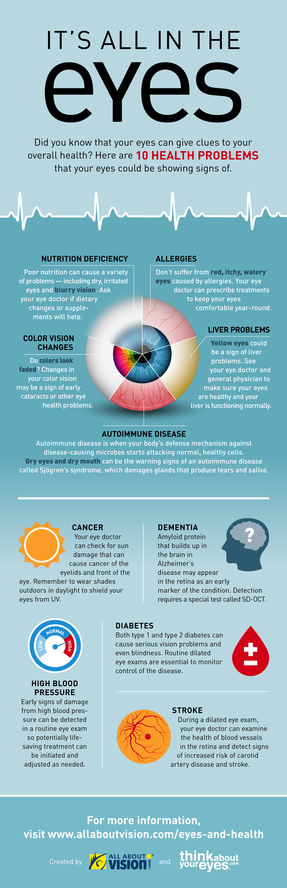

Healthy Vision Tips | National Eye Institute
Skip to content
COVID-19 is an emerging, rapidly evolving situation.
Get the latest public health information from CDC Get the latest research information from NIH
Close this notice National Eye Institute Menu Learn About Eye Health Healthy Vision Eye Conditions and Diseases NEI for Kids En español Resources for Health Educators Grants and Training How to Apply Funding Opportunities Training at NEI Funding for Training and Career Development Policies and Procedures Resources for Researchers Contact Grants and Funding Staff Research at NEI Clinical Trials Research Labs and Branches Jobs and Training Opportunities at NEI About NEI Strategic Planning News and Events Goals and Accomplishments NEI History NEI Leadership Budget and Congress Advisory Committees Donate to NEI Home Learn About Eye Health NEI for Kids Healthy Vision TipsHealthy Vision Tips
All About Vision About the Eye Ask a Scientist Video Series Glossary The Visual System Your Eyes’ Natural Defenses Eye Health and Safety First Aid Tips Healthy Vision Tips Protective Eyewear Sports and Your Eyes Fun Stuff Cool Eye Tricks Links to More Information Optical Illusions PrintablesHealthy vision starts with you! Use these 10 tips to take care of your eyes.
1.Eat right to protect your sight.
Keep your eyes healthy by eating a well-balanced diet. Load up on different types of fruits and veggies, especially leafy greens like spinach, kale, and collard greens. Fish like salmon, tuna, and halibut have been shown to help your eyes, too.
2.Get moving.
Did you know that kids who exercise often have a healthier body weight than kids who don’t? Being overweight or obese can put you at higher risk for diabetes and other conditions that can lead to vision problems.
3.Speak up if your vision changes.
Is your vision blurry? Do you squint a lot? Ever have trouble seeing things at school? Tell a parent or teacher if your eyes are bothering you or if you notice any changes in your vision.
4.Wear your glasses.
Your glasses help you see better, especially when they’re clean and free of smudges. Talk to an adult about how to clean your glasses and how to store them when you’re not wearing them.
5.Keep the germs away.
Always wash your hands before putting them close to your eyes, especially if you’re putting in or taking out contact lenses.
6.Gear up.
Playing your favorite sport? Using chemicals during science class? Mowing the lawn? Wear the right protection to keep your eyes safe. Many eye injuries can be prevented with better safety habits, such as using protective eyewear.
7.Wear your shades.
The sun’s rays can hurt your eyes. Choose sunglasses that block 99% or 100% of both UVA and UVB radiation from the sun. And remember, you should never look directly at the sun.
8.Give your eyes a break.
Do you spend a lot of time looking at a computer, phone, or TV screen? Staring at any one thing for too long can tire your eyes. Give your eyes a rest with the 20-20-20 rule: Every 20 minutes, look about 20 feet away for 20 seconds.
9.Say no to smoking.
Did you know that smoking is as bad for your eyes as it is the rest of your body? Smoking can put you at risk for some pretty serious eye issues, which can lead to blindness.
10.Talk about it.
Does anyone in your family have issues with their eyes? Not sure? Ask! Talking about eye health with your family can help all of you stay healthy.
Ask a Scientist Why shouldn't you look directly at the sun? Find out with Dr. Chew.
Did You Know?
You may have heard that eating carrots is good for eyes. That’s true, but other foods like spinach, kale, salmon, and tuna may be even better. They have vitamins that your eyes need to stay healthy.
Last updated: June 26, 2019 National Eye Institute Facebook Twitter LinkedIn YouTube
Contact NEI
Contact Us Visit NIH Get Email Updates from NEIPolicies
Accessibility Information in Other Languages Privacy Freedom of Information Act (FOIA) Disclaimers Web PoliciesFor NEI Employees
Intranet Emergency Information NIH Staff Directory NIH.gov HHS.gov USA.gov